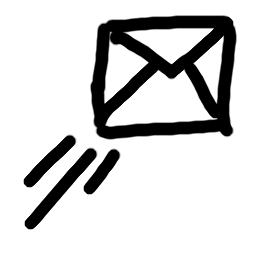
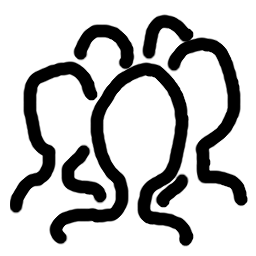
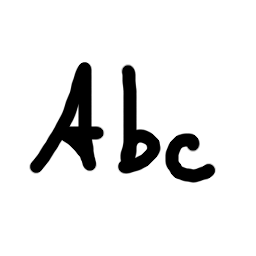
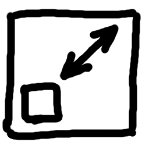
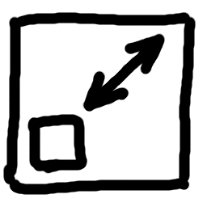
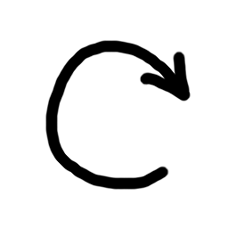
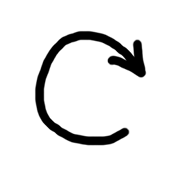

.
In dem dann erscheinenden Dialogfenster geben Sie Folgendes ein
(falls es nicht schon vorab eingetragen ist):
.
In dem dann erscheinenden Dialogfenster geben Sie Folgendes ein
(falls es nicht schon vorab eingetragen ist):mailARS ist ein Open-Source-Programm für Windows, macOS und Linux, mit dem Studierende während der (typischerweise virtuellen) Lehrveranstaltung Aufgaben erhalten, individuell bearbeiten sowie ihre Arbeit (auch als Foto) zurückschicken können und Lehrende in der Gesamtsicht oder individuell reagieren können. Es ist zur Verwendung parallel zu Videokonferenzsoftware gedacht. Zur Didaktik siehe das Paper über die vorherige, Browser-basierte Variante.
Technisch ist mailARS ein E-Mail-Client, der mit Grafiken statt Text arbeitet. Der Grund für diese Lösung ist die DSGVO, denn so wird nur die an allen Hochschulen existente Technik für E-Mails benutzt. Insbesondere muss es dafür bereits Verfahrensverzeichnisse, Vorschriften zu Archivierung und Löschung usw. geben. Für den Betrieb von mailARS sollte damit keine weitere organisatorische Arbeit anfallen.
Für Meldungen zu Updates beachten Sie bitte: https://j3l7h.de/blog/
mailARS arbeitet mit E-Mail-Servern zusammen, welche die Protokolle SMTP und IMAP benutzen. Falls Ihre Institution andere Protokolle oder eine zusätzliche Authentifizierung verwendet, müssen Sie den Quellcode der Datei mailing.py anpassen bzw. ergänzen.
Wollen Sie ein Smartphone oder ein Tablet zum Zeichnen verwenden, sollten Sie jenes als weiteren Bildschirm an den Rechner anschließen und das jeweilige Zeichenfenster dorthin ziehen. Ebenso sollte sich ein Smartphone als Webcam nutzen lassen.
mailARS ist in Python geschrieben und benötigt zur Ausführung Python 3.7 oder neuer; empfohlen ist mindestens Python 3.8. Unter Windows 10 können Sie Python aus dem Microsoft Store installieren. Unter macOS ist standardmäßig nur Python 2.x installiert; das muss upgedatet werden. Unter Linux sollte eine aktuelle Version von Python bereits installiert sein. Für andere Betriebssysteme besuchen Sie Python.org.
Um zu prüfen, ob Python korrekt installiert ist, öffnen Sie ein Terminalfenster (Windows 10: in das Suchfeld cmd eingeben) und tippen dort python⏎ ein. Danach sollte sich Python mit seiner Versionsnummer melden. (Ist Python unter Windows 10 nicht systemweit installiert, geht dort stattdessen der Microsoft Store auf.) Prüfen Sie die Versionsnummer. Damit es zu keinen Verwirrungen kommt, sollten Sie nur eine Version von Python installiert haben. Verlassen Sie Python dann mit quit()⏎.
mailARS benötigt eine Bibliothek für grafische Oberflächen
und eine Bibliothek zum
Ansprechen der Kamera. Geben Sie deshalb bei laufender Internetverbindung
in das Terminalfenster (nicht in Python!) ein:
pip install pyqt5 opencv-python numpy==1.19.3⏎
Unter macOS tippen Sie dagegen:
pip install pyqt5 opencv-python-headless⏎
(Tipp: Kopieren Sie das aus diesem Text, ohne den Pfeil ⏎.)
Wenn danach Warnungen wegen einer alten pip-Version oder wegen nicht eingestellter Pfade erscheinen,
können Sie diese normalerweise ignorieren.
Sie sollten mailARS als Zip-Archiv erhalten haben, das auch diese Anleitung enthält. Überprüfen Sie dieses Zip-Archiv mit einem Virenscanner, zum Beispiel online mit VirusTotal. Entpacken Sie das Zip-Archiv (Windows: rechter Mausklick auf das Archiv, Alle extrahieren). mailARS muss Dateien schreiben und kann deshalb nicht aus dem unentpackten Zip-Archiv heraus gestartet werden.
Durch einen Doppelklick auf die Datei __main__.py starten Sie mailARS. Wenn Sie wollen, dass unter Windows nicht zusätzlich zu den grafischen Fenstern ein Terminalfenster aufgeht, können Sie diese Datei in __main__.pyw umbenennen. Um diese Umbennung korrekt vorzunehmen, müssen Sie die Dateierweiterungen anzeigen lassen – was Sie aus Sicherheitsgründen sowieso immer tun sollten.
Wenn auf Ihrem Rechner eine Firewall installiert ist, müssen Sie diese gegebenenfalls so einstellen, dass mailARS die Ports 587 (SMTP) und 993 (IMAP) ansprechen kann.
Andere Programme wie GIMP oder Inkscape, die Python verwenden, ändern ggf. dessen Einstellungen, so dass mailARS nicht gleichzeitig mit diesen funktioniert.
Bei jedem Start fragt mailARS nach dem E-Mail-Passwort. Aus Sicherheitsgründen speichert es das nicht mit den übrigen Einstellungen.
Um die übrigen Einstellungen von mailARS dauerhaft vorzunehmen,
klicken Sie im Hauptfenster auf .
In dem dann erscheinenden Dialogfenster geben Sie Folgendes ein
(falls es nicht schon vorab eingetragen ist):
Das Hauptfenster von mailARS zeigt die drei Postfächer (Empfangen, Entwürfe, Gesendet). Wenn man dieses Hauptfenster schließt (aber nicht, wenn man es nur verbirgt), beendet sich mailARS.
Nach einem Klick auf  holt
mailARS Mails vom Server. Dieser Knopf ist rot gefärbt
holt
mailARS Mails vom Server. Dieser Knopf ist rot gefärbt
 , wenn
seit etwa einer Minute auf dem Server Mails vorhanden sind. Probleme beim Abholen
der Mails (typischerweise Vertipper im Passwort) werden unten in der Statusleiste
dieses Fensters gemeldet, samt der jeweiligen Uhrzeit.
, wenn
seit etwa einer Minute auf dem Server Mails vorhanden sind. Probleme beim Abholen
der Mails (typischerweise Vertipper im Passwort) werden unten in der Statusleiste
dieses Fensters gemeldet, samt der jeweiligen Uhrzeit.
Um den Überblick zu behalten, sollten Lehrende die Funktion
 einschalten, mit im Posteingang nur die von jeder Person jeweils letzte
Mail gezeigt wird.
einschalten, mit im Posteingang nur die von jeder Person jeweils letzte
Mail gezeigt wird.
Wie groß die Vorschaubildchen in den Postfächern erscheinen
(genauer: wie viele Spalten davon gebildet werden, wenn es genügend viele sind),
stellt man mit dem Schieberegler ein, der bei Klick auf
 erscheint.
erscheint.
Hält man die Maus über eines der Vorschaubildchen in einem der drei Postfächer,
erscheinen die Namen des Absenders bzw. der Adressaten
sowie der Zeitstempel der Mail bzw. der Erstellungszeitpunkt des Entwurfs.
Nach einem Klick auf  werden alle Mails
des jeweiligen Postfachs als Seiten einer PDF-Datei in das Unterverzeichnis
export von mailARS exportiert. Sollen nur einige
Mails so exportiert werden, kann man diese mit den Checkboxen oben links
im jeweiligen Vorschaubildchen auswählen. Um mehrere auszuwählen,
ist dabei die Umschalttaste (Shift)
zu drücken.
werden alle Mails
des jeweiligen Postfachs als Seiten einer PDF-Datei in das Unterverzeichnis
export von mailARS exportiert. Sollen nur einige
Mails so exportiert werden, kann man diese mit den Checkboxen oben links
im jeweiligen Vorschaubildchen auswählen. Um mehrere auszuwählen,
ist dabei die Umschalttaste (Shift)
zu drücken.
Eine neue Mail entsteht durch Klick auf . Dann und ebenso, wenn man eine Vorschau in einem der drei Postfächer anklickt, öffnet sich das Zeichenfenster von mailARS zum Bearbeiten der betreffenden Mail. Es können viele Zeichenfenster gleichzeitig offen sein.
Zum Abschicken einer Mail klicken Sie im Zeichenfenster auf
. Etwaige Fehler (typischerweise
ein falsch eingegebenes Passwort) erscheinen in der Statusleiste des
Hauptfensters. Der Knopf zum Senden ist rot gefärbt
 , wenn Sie im Zeichenfenster
an der Mail gearbeitet haben. Sie können das Fenster auch offen lassen,
weiter an der Mail arbeiten und diese immer wieder versenden.
, wenn Sie im Zeichenfenster
an der Mail gearbeitet haben. Sie können das Fenster auch offen lassen,
weiter an der Mail arbeiten und diese immer wieder versenden.
Wenn Sie eine Mail verändert haben und das Zeichenfenster schließen, ohne die Mail gesendet zu haben, landet sie im Postfach für Entwürfe. Genauer gesagt, wird von jeder Mail, die kein Entwurf ist, im Postfach für Entwürfe zeitweise eine Kopie angelegt. Wenn Sie die Mail nicht editieren, wird diese Kopie wieder gelöscht.
Vor dem Absenden können Sie kontrollieren und verändern, an welche Adressaten die Mail geschickt wird; dazu klicken Sie auf .
Damit Ihr Postfach nicht mit Mails überflutet wird, legt mailARS dort einen Ordner namens mailARS an und verschiebt alle Mails mit seinem Betreff mailARS, not intended for reading dorthin. Sicherheitshalber werden diese Mails nicht einfach gelöscht. Mit Hilfe Ihres üblichen E-Mail-Programms sollten Sie diesen Ordner gelegentlich auf Irrläufer überprüfen und ihn leeren. Etwa in Thunderbird müssen sie dazu diesen – sonst unsichtbar bleibenden – Ordner abonnieren (rechter Mausklick auf den Titel des Mail-Kontos in der Liste am linken Bildschirmrand). Wenn Sie eine automatische Weiterleitung vom Mail-Server der Hochschule auf einen eigenen Server eingerichtet haben, hilft das automatische Verschieben nicht; greifen Sie lieber direkt auf den Mail-Server der Hochschule zu – am besten mit einem Mail-Programm wie Thunderbird, das mehrere Konten parallel verwalten kann.
Mit  wählen Sie das Zeichenwerkzeug
wählen Sie das Zeichenwerkzeug
 .
Bei Klick auf
.
Bei Klick auf  öffnet sich ein Dialog zur
Auswahl einer Farbe, bei Klick auf
öffnet sich ein Dialog zur
Auswahl einer Farbe, bei Klick auf  ein Schieberegler zur Einstellung der Strichstärke. Beide Einstellungen
sieht man dauerhaft daneben in einer kleinen Vorschau.
Mit
ein Schieberegler zur Einstellung der Strichstärke. Beide Einstellungen
sieht man dauerhaft daneben in einer kleinen Vorschau.
Mit  wählen Sie das Radierwerkzeug
wählen Sie das Radierwerkzeug
 .
Es wirkt nur auf Striche und löscht diese jeweils komplett.
Mit der rechten Maustaste
oder dem oberen Ende eines entsprechenden aktiven Stifts
oder mit der als rechter Maustaste konfigurierten Taste eines Stifts
können Sie beim Zeichnen radieren, ohne das Werkzeug umschalten
zu müssen.
.
Es wirkt nur auf Striche und löscht diese jeweils komplett.
Mit der rechten Maustaste
oder dem oberen Ende eines entsprechenden aktiven Stifts
oder mit der als rechter Maustaste konfigurierten Taste eines Stifts
können Sie beim Zeichnen radieren, ohne das Werkzeug umschalten
zu müssen.
Mit  wählen Sie das Textwerkzeug
 .
Ziehen Sie damit einen Rahmen auf und tippen/editieren Sie darin
Text wie gewohnt. Mindestens unter Windows funktioniert hier auch
die Unterstützung für alternative Texteingabesysteme wie Pinyin.
Um den Kasten zu ändern, in dem ein Text erscheint, ziehen Sie
mit dem Textwerkzeug dessen Ränder. Die Größe der Schriftart stellen sie
mit dem Schieberegler unter
.
Ziehen Sie damit einen Rahmen auf und tippen/editieren Sie darin
Text wie gewohnt. Mindestens unter Windows funktioniert hier auch
die Unterstützung für alternative Texteingabesysteme wie Pinyin.
Um den Kasten zu ändern, in dem ein Text erscheint, ziehen Sie
mit dem Textwerkzeug dessen Ränder. Die Größe der Schriftart stellen sie
mit dem Schieberegler unter  ein.
Um einen existierenden Text zu editieren, klicken Sie mit dem
Textwerkzeug auf diesen. Sie können dann auch dessen Rahmen ziehen.
ein.
Um einen existierenden Text zu editieren, klicken Sie mit dem
Textwerkzeug auf diesen. Sie können dann auch dessen Rahmen ziehen.
Durch Klick auf öffnen Sie ein Vorschaufenster, um ein Foto zu machen, das dann in die Zeichnung eingefügt wird. (Dazu muss erstens eine Kamera verfügbar sein und zweitens darf diese nicht schon für die Videokonferenz verwendet werden.) Das Kamerabild wird auf maximalen Kontrast optimiert, um Schrift und Zeichnungen auf Papier auch bei mäßiger Beleuchtung lesbar abzubilden. Die Vorschau ist spiegelverkehrt, damit Sie leichter das Papier vor der Kamera ausrichten können.
Mit  erhalten Sie das Auswahlwerkzeug
.
Durch Anklicken oder Aufziehen eines Rechtecks damit selektieren Sie Objekte
in der Zeichnung. Wenn Sie dabei die Umschalttaste (Shift) drücken, wird die
bisherige Selektion um die neu gewählten Objekte erweitert;
mit der Steuerung-Taste (Strg, Ctrl) werden die neu gewählten Objekte
aus der bisherigen Selektion entfernt.
erhalten Sie das Auswahlwerkzeug
.
Durch Anklicken oder Aufziehen eines Rechtecks damit selektieren Sie Objekte
in der Zeichnung. Wenn Sie dabei die Umschalttaste (Shift) drücken, wird die
bisherige Selektion um die neu gewählten Objekte erweitert;
mit der Steuerung-Taste (Strg, Ctrl) werden die neu gewählten Objekte
aus der bisherigen Selektion entfernt.
Über der Mitte der Auswahl erscheinen die Icons
 und .
Indem man diese zieht, werden die ausgewählten Objekte verschoben oder
verkleinert bzw. vergrößert. Sind Objekte ausgewählt,
wirken Änderungen von Strichstärke, Strichfarbe
und Schriftgröße auf alle davon. Mit
und .
Indem man diese zieht, werden die ausgewählten Objekte verschoben oder
verkleinert bzw. vergrößert. Sind Objekte ausgewählt,
wirken Änderungen von Strichstärke, Strichfarbe
und Schriftgröße auf alle davon. Mit  löscht man die ausgewählten Objekte oder – falls keine ausgewählt sind –
alle Objekte.
löscht man die ausgewählten Objekte oder – falls keine ausgewählt sind –
alle Objekte.
Die Undo/Redo-Funktionen sind  und . Beim Editieren
eines Textes funktionieren stattdessen Strg+Z und Strg+Y.
und . Beim Editieren
eines Textes funktionieren stattdessen Strg+Z und Strg+Y.
Durch Klick auf die Taste P lässt sich die Werkzeugleiste ausblenden und wieder einblenden, um Platz auf dem Bildschirm zu sparen, das Bild optisch zu entschlacken und unmöglich zu machen, dass man das Fenster versehentlich verschiebt. Alle Funktionen sind mit den Tastaturkürzeln erreichbar, die in den Tooltipps des jeweiligen Knopfs erscheinen. Achten Sie bei der Tastaturbedienung darauf, dass das Zeichenfenster auch das aktive Fenster ist und die Tastendrücke nicht versehentlich an ein anderes gehen, etwa den Browser. Bei ausgeblendeter Werkzeugleiste muss der Modus zur Textbearbeitung mit dem X unten rechts am Textkasten verlassen werden. Die Tasten 1 bis 6 sind mit Farben belegt.
Um mailARS an die Studierenden weiterzugeben, empfiehlt sich
Eine Alternative zum Verteilen nur des Python-Codes besteht darin, eine komplett vorbereitete und ggf. sogar installationsfreie Python-Umgebung bereitzustellen, zum Beispiel mit WinPython Zero.
Bitten Sie die Studierenden, Ihnen am Anfang oder sobald sie zur Sitzung dazustoßen, ein leeres Bild zu schicken. So erfährt Ihr mailARS die Adressen, damit Sie dann Aufgaben an alle schicken können. mailARS behält diese Adressen nur bis zum Programmende.
Öffnen Sie zu Beginn der Sitzung sofort ein neues Zeichenfenster und verwenden sie dies als Tafel für alles Weitere. Wenn Sie mit einem einzigen Bildschirm arbeiten, sollten Sie nur dieses Fenster, aber nicht den gesamten Bildschirm per Screensharing in Ihrer Videokonferenzsoftware teilen. Wenn Sie dagegen mit zwei Bildschirmen arbeiten, können Sie dieses Fenster den einen Bildschirm füllen lassen (den Sie dann per Screensharing teilen) und alle anderen Fenster von mailARS (einschließlich weiterer Zeichenfenster) auf den anderen Bildschirm schieben. Weil mailARS jedes weitere Zeichenfenster an der Stelle und der Größe öffnet, zu der / auf die zuletzt ein Fenster gezogen worden ist, genügt es, nur ein Zeichenfenster auf den zweiten Bildschirm zu schieben. Alle weiteren erscheinen dann dort.